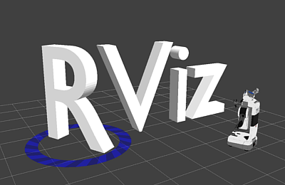
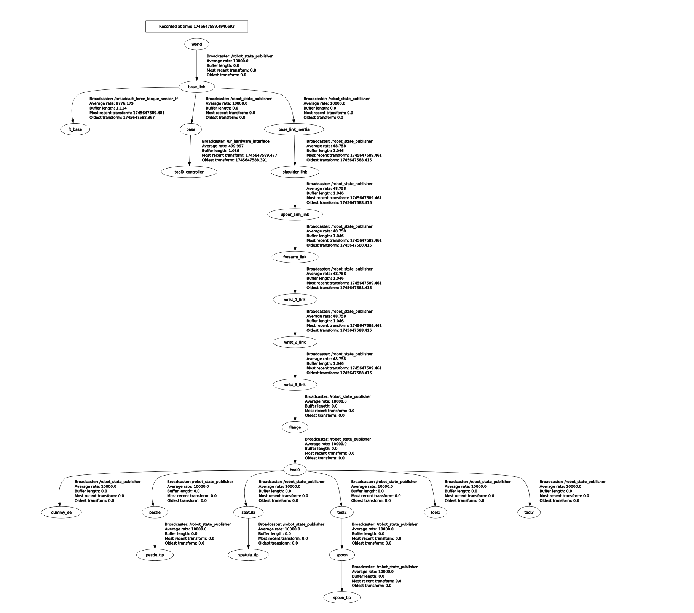

ゼロからのROS入門
ロボットモデルの表示
大阪大学 中島優作
ROSでのロボットモデルの表示の仕組み

ROSでのロボットモデルの表示の仕組み

ロボットモデルを変更する場合は基本ここを書き換える
TF（Transformation）
- ROS標準搭載のシステムの1つ、実際はTFの改良版のTF2を使う
- 機能1：座標変換
- エンドエフェクタのベース座標系やツール座標系の計算

TF（Transformation）
- 機能2：座標管理
- 座標をツリー構造で管理(使えるのは開ループのみ、閉ループは使えないので注意)
- 座標データは時系列。例えば1秒前の座標で計算すると現実と計算で座標がずれる
- そういう不都合が生じないように「n秒以内に取得した座標しか計算に使わない」などの管理をTFが行ってくれる
- 詳細な解説はTF完全理解という資料が分かりやすい
ロボットモデル = ロボットアームの構造

- ジョイント(関節): モーターが入っていて動く
- リンク: ジョイントを繋ぐ。剛性が高い方がロボット動作の精度が良くなる
- エンドエフェクタ(手先効果器): 作業をする手先。作業に応じて付け替える
URDF（Unified Robot Description Format）
- ジョイントとリンクの定義が書いてあり、以下が主な要素
- Joint: 自由度(回転か並進か等), 親リンクと子リンク
- Link:
- Visual: JointとLinkは骨組みしか定義していない。ここでstlファイルなどを定義して肉付け
- Collision: 干渉計算用の肉付け(通常は計算量を減らすためにSTLではなく円柱などシンプルな形状)
- Inertial: 物理計算用の質量や慣性テンソルの定義
XACRO（XML Macros for Robots）
- ロボットアームはリンク→ジョイントの繰り返し構造が多いのに、URDFはべた書きなので効率が悪い
- URDFにマクロ(関数等)を追加したのがXACRO
- XACRO読み込み時に変数を渡す
- 関数で繰り返し構造の定義を簡素化する

エンドエフェクタを追加したい場合
- XACROのinclude機能が便利です
- 既にあるURDFやXACROを呼び出せるのでエンドエフェクタ部分だけ自分で追記すればよいです
<?xml version="1.0"?>
<robot xmlns:xacro="http://www.ros.org/wiki/xacro" name="robot_with_end_effector">
<xacro:include filename="$(find my_robot_arm)/urdf/arm.xacro"/>
<link name="end_effector_base"/>
<joint name="arm_to_ee" type="fixed" />
<link name="end_effector_1"/>
</robot>
URのロボットモデルの表示デモ
- 以下のlaunchを作成して起動(ロボットモデルの表示の仕組みのシステムをlaunchに落とし込んだもの)
<launch>
<arg name="model" default="$(find grinding_descriptions)/urdf/ur/ur5e.urdf"/>
<param name="robot_description" command="$(find xacro)/xacro '$(arg model)'" />
<node name="joint_state_publisher_gui" pkg="joint_state_publisher_gui" type="joint_state_publisher_gui" />
<node name="robot_state_publisher" pkg="robot_state_publisher" type="robot_state_publisher" />
</launch>
- 別ターミナルでRVizを起動(rvizコマンド)
- RvizでRobotModelやTFを表示
- joint_state_publisher_guiで動かせます
※このデモはロボットの表示が変わるだけです この方法でロボット制御はできません
おまけ：ノードの確認
初めに紹介した表示の仕組みはRQTのNodeGraphで確認できます
(TFトピックやRvizノードはデフォルトだと非表示なので、左上をNodes/Topicsに切り替えてください)

おまけ：TFの確認
TFの構造はRQTのTF Treeで確認できます
rosrun rqt_tf_tree rqt_tf_tree